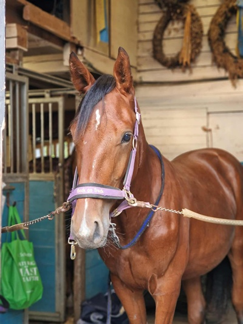

Midsummer Express
 "Midde"e. Express Bourbon (FR) u. Sparkle Sober ue. S.J.'S Caviar (US)
Uppfödare: Sandra & Evelina Jonsson, Mantorp
Ägare och Tränare: Evelina Jonsson, Mantorp
Midde föddes på självaste Midsommarafton. Han föddes med expressfart. Bubblan var ensam i
stallet i någon timme och då passade hon på att föda Midde. Så han fick namnet Midsummer Express.
~~~~~~~~~~~~~~~
© Stall Nysäter 2025